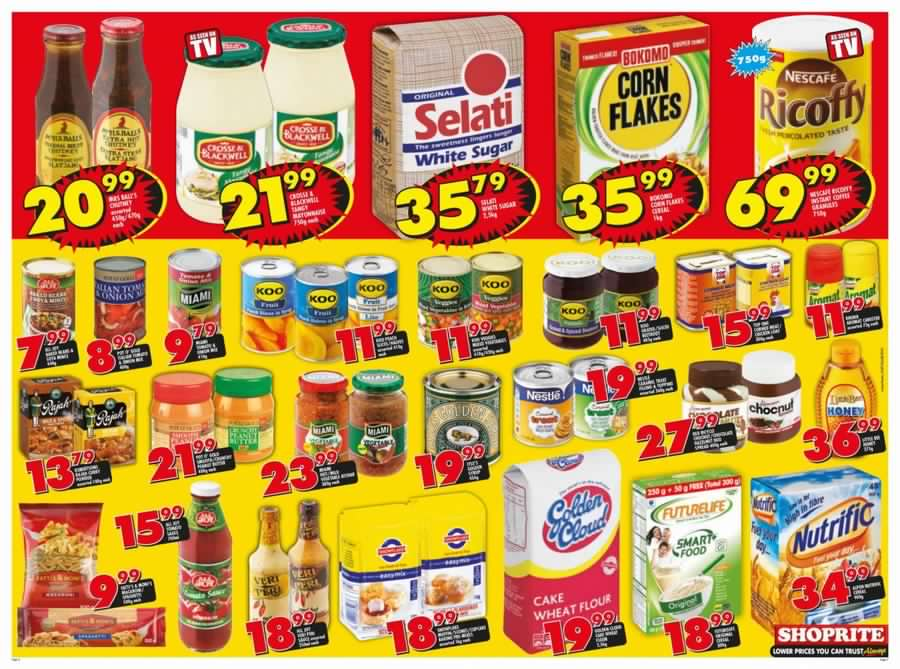
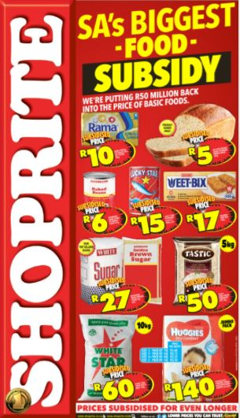
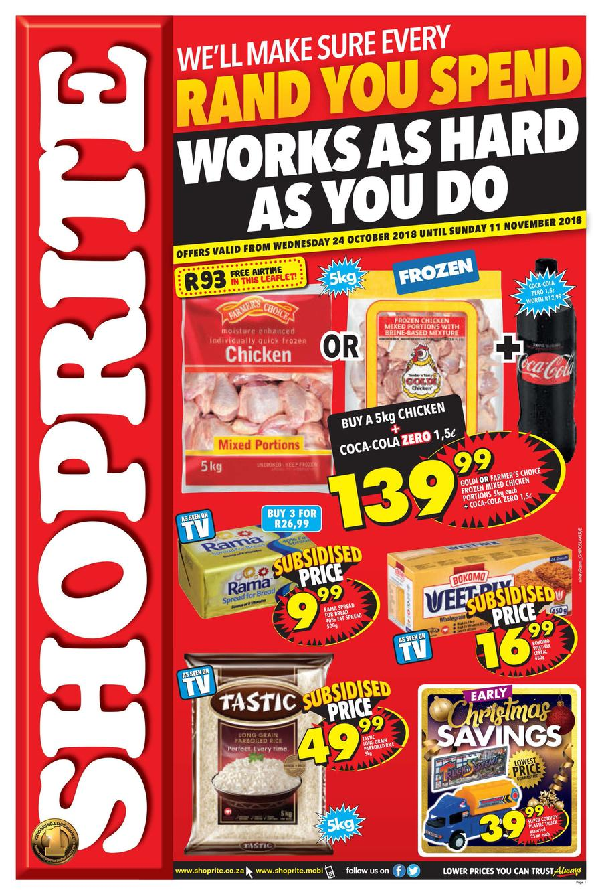
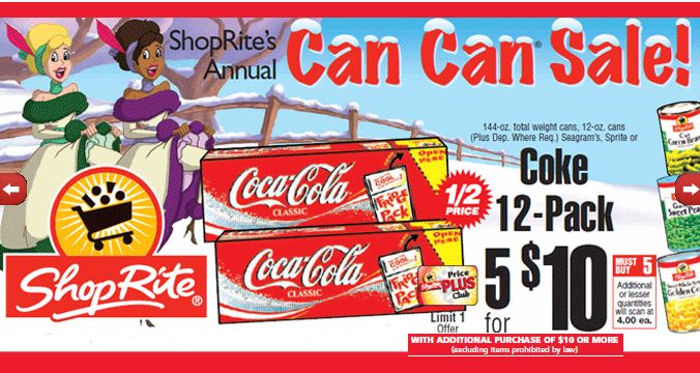

SHOPRITE STORE
The Shoprite Group of companies was established in 1979. In 1990 Shoprite opened in Namibia. In 1998, it acquired the national Checkers chain. In 1995 the first store in Lusaka, Zambia, was opened. That same year they acquired a centralised distribution company Sentra, which had been acting as a central buyer for 550 owner-managed supermarkets, thereby allowing Shoprite to expand into franchising.[7] On 24 December 1996 a bomb exploded in a Worcester Shoprite and killed 3 people and injured over 50.It was a racially motivated act that shocked the company. In 1997 struggling "OK Bazaars" was acquired by the company from South African Breweries for one rand,[8] adding 139 OK Bazaars stores and 18 Hyperamas to the company.[9] In 2000 the group opened its first supermarkets in Zimbabwe and Uganda.[10][11] Two years later the company acquired the Madagascar stores of French chain Champion. The same year the company bought three Tanzanian supermarkets from Score Supermarket and opened it first Hypermarket outside of South Africa in Mauritius. In 2005 the Group acquired Foodworld as well as South African ticket seller Computicket, and opened the first Shoprite LiquorShop. The company also opened its first Nigerian store in the Victoria Island area of Lagos in December 2005.[12][13] In 2008 the Shoprite Group was added to the JSE Top-40 Index of blue-chips. In 2019 Shoprite won the Proudly South African Brand Award and was voted the best in the Grocery Store category as part of the Tiso-Blackstar/Sunday Times Top Brand Survey.[14] Deloitte's Global Powers of Retailing 2019 (covering the 2017 financial year) ranked The Shoprite Group as the 86th largest retailer in the world.[15] In 2011 it was announced that the Shoprite Group entered into an agreement with Metcash Trading Africa (Pty) Limited. Under the terms of that agreement, the franchise division of Metcash was to be sold to Shoprite Checkers, including franchise arrangements with franchisees operating retail stores under registered trademark names such as Friendly and Seven Eleven.[16][17] On 19 April 2012, Shoprite became the first South African retailer to enter the Democratic Republic of Congo (DRC) as it opened the doors of a new supermarket in Gombe, Kinshasa.[18] Shoprite Holdings announced at the company's Annual General Meeting held on 31 October 2016 that the company's Chief Executive Officer, Whitey Basson, decided to retire at the end of December 2016. The board appointed Pieter Engelbrecht (born c. 1970), the former Chief Operating Officer, as the incoming CEO as of 1 January 2017. He had been with the company for over 20 years and played a leading role in the company's growth under Basson's leadership.[19] Shoprite opened its first supermarket in Kenya at the Westgate Mall in Nairobi during December 2018.[20] Brands Shoprite Holdings Limited comprises the following entities: The Shoprite Checkers Supermarket Group, which consists of: 683 Shoprite supermarkets; 233 Checkers Supermarkets; 37 Checkers Hypers; 425 Usave stores; 442 Furniture outlets (including OK Furniture, OK Power Express, House & Home) 144 MediRite pharmacies and 343 LiquorShops. It has a ticketing business, Computicket, which operates from counters within Group stores and various free-standing outlets. Through its OK Franchise Division, the Group procures and distributes stock to: OK MiniMark convenience stores; OK Foods supermarkets; OK Grocer stores; Megasave wholesale stores; OK Value stores; Sentra stores and buying partners, Friendly supermarkets; Friendly Liquor stores; OK Express; OK Liquor stores.
STORE HOURS
MONDAY: 8:00 AM - 10:00 PM
TUESDAY: 8:00 AM - 10:00 PM
WEDNESDAY: 8:00 AM - 8:00 PM
THURSDAY: 8:00 AM - 8:00 PM
FRIDAY: 8:00 AM - 10:00 PM
SATURDAY: 8:00 AM - 10:00 PM
SUNDAY: 7:00 AM - 00:00 PM
SPECIALS    